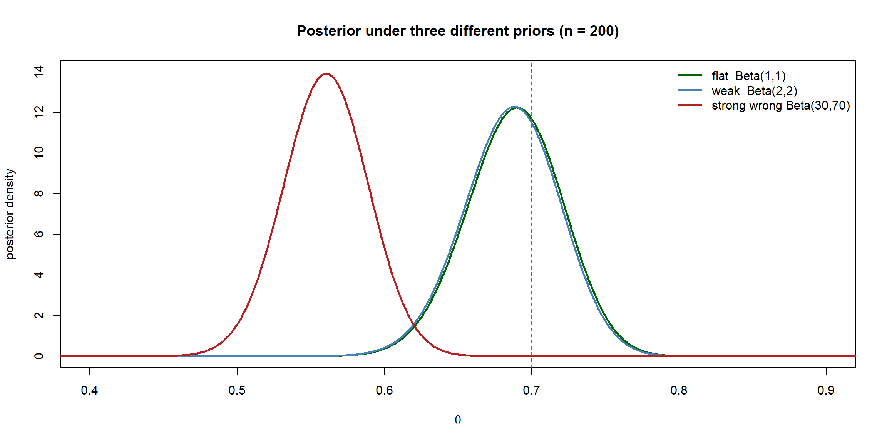
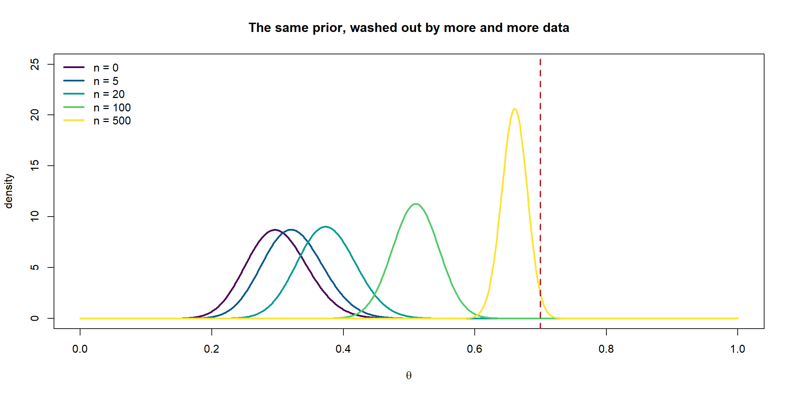
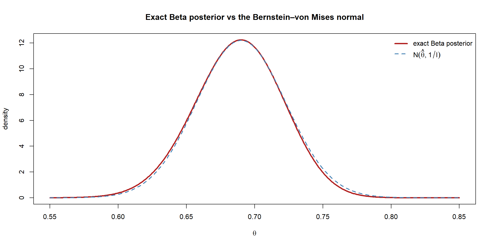

flowchart LR
P["Choose a prior<br/>informative / weak / flat"] --> U["Update with data"]
U --> S{"Is n large?"}
S -->|"small n"| A["Prior still matters —<br/>do a sensitivity check"]
S -->|"large n"| B["Prior washes out;<br/>posterior ≈ N(MLE, 1/I)<br/>→ agrees with frequentist"]
Priors and the Large-Sample Bridge
The previous page took the prior as given — a tidy \(\text{Beta}(2,2)\) pulled from the air. But the prior is the one ingredient frequentists do not use, and the most common objection to Bayesian methods: “isn’t the answer just whatever you assume going in?” This page answers that charge. It explains where priors come from, shows how to check whether your prior is steering the result, and then proves the reassuring punchline: as data accumulates, the prior washes out and the Bayesian posterior converges on the very same answer the frequentist would give. That convergence — the Bernstein–von Mises theorem — is the bridge between the two sections.
Kinds of prior
A prior encodes what you know before the data. How much it should say depends on how much you actually know.
flowchart TD Q["How much do I know about θ<br/>before seeing the data?"] Q -->|"a lot — past studies,<br/>physical limits"| I["Informative prior<br/>narrow, opinionated"] Q -->|"a little — just<br/>plausible ranges"| W["Weakly-informative prior<br/>gentle, regularising"] Q -->|"claim to know nothing"| F["Flat / non-informative prior<br/>let the data speak"]
- Informative prior. A narrow distribution carrying genuine prior knowledge — e.g. \(\text{Beta}(70,30)\) for a coin a previous experiment already suggested was biased toward heads. Powerful when the knowledge is real, dangerous when it is wishful.
- Weakly-informative prior. A deliberately gentle distribution that rules out the absurd (a coin bias of exactly 0, a negative variance) without pushing hard toward any value — e.g. \(\text{Beta}(2,2)\). The modern default: it regularises the estimate (pulling extreme small-sample answers toward something sensible) while being easily overruled by data.
- Flat / non-informative prior. An attempt to “assume nothing,” e.g. the uniform \(\text{Beta}(1,1)\). With a flat prior the posterior is proportional to the likelihood alone, so the MAP estimate equals the frequentist MLE. Genuine non-informativeness is subtler than it looks (a prior flat in \(\theta\) is not flat in, say, \(\log\theta\)); the Jeffreys prior, for the coin \(\text{Beta}(\tfrac12,\tfrac12)\), is the principled construction that is invariant to such reparametrisations.
NoteIn a nutshell: skippable on a first read
The Jeffreys-prior sentence above — “flat in \(\theta\) isn’t flat in \(\log\theta\)” — is a subtlety you can safely skip the first time through. The only takeaway you need is: “flat” is trickier than it sounds, because a prior that looks even-handed on one scale can be lopsided on another. Come back to the Jeffreys construction once the rest of the page feels comfortable.
NoteThe prior as pseudo-data
Conjugacy gives the prior a wonderfully concrete reading. A \(\text{Beta}(a,b)\) prior contributes exactly like having already seen \(a-1\) heads and \(b-1\) tails before the experiment began. An informative \(\text{Beta}(70,30)\) is “100 prior flips”; a weak \(\text{Beta}(2,2)\) is “two prior flips.” Seen this way it is obvious why a handful of pseudo-observations cannot survive contact with 200 real ones.
Conjugate priors beyond the coin
The Beta–Binomial pairing from the last page is one of a small family of conjugate prior–likelihood combinations where the posterior stays in the prior’s family and updating is pure arithmetic. The three you will actually use:
| Likelihood (data model) | Conjugate prior | Posterior | Update rule |
|---|---|---|---|
| Binomial / Bernoulli, prob. \(\theta\) | \(\text{Beta}(a,b)\) | \(\text{Beta}(a+k,\, b+n-k)\) | add heads to \(a\), tails to \(b\) |
| Poisson, rate \(\lambda\) | \(\text{Gamma}(a,b)\) | \(\text{Gamma}(a+\sum y_i,\, b+n)\) | add total count to \(a\), sample size to \(b\) |
| Normal (known \(\sigma^2\)), mean \(\mu\) | \(\mathcal N(\mu_0, \tau_0^2)\) | \(\mathcal N(\cdot, \cdot)\) | precision-weighted average of \(\mu_0\) and \(\bar x\) |
NoteIn a nutshell: “precision-weighted average”
Precision is just \(1/\text{variance}\) — a measure of how certain a source is. The Normal–Normal posterior mean is a precision-weighted average of the prior mean \(\mu_0\) and the data mean \(\bar x\): each is weighted by its own precision, so the more certain source pulls harder. A sharp prior (high precision) or a large, tight sample (high precision) gets more say; a vague one gets less.
We use the Gamma–Poisson row in the worked examples to put a Bayesian treatment on R’s discoveries data — the same dataset the frequentist worked-examples page modelled.
Prior sensitivity: does the prior drive the answer?
The honest way to address the subjectivity worry is not to argue about it but to measure it: refit under several priors and see whether the posterior actually moves. If reasonable priors give materially the same posterior, the prior is not driving the result and the analysis is robust. We do exactly this on the coin data, comparing a flat, a weak, and a (deliberately wrong) strongly-informative prior.
Code
```{r}
#| warning: false
#| message: false
#| fig-align: center
set.seed(1)
trueTheta <- 0.7
n <- 200
k <- sum(rbinom(n, 1, trueTheta))
# Three priors: flat, weak, and a strong WRONG belief that the coin favours tails
priors <- list(
"flat Beta(1,1)" = c(1, 1),
"weak Beta(2,2)" = c(2, 2),
"strong wrong Beta(30,70)" = c(30, 70)
)
theta <- seq(0, 1, length.out = 1000)
cols <- c("darkgreen", "steelblue", "firebrick")
plot(NA, xlim = c(0.4, 0.9), ylim = c(0, 14),
xlab = expression(theta), ylab = "posterior density",
main = "Posterior under three different priors (n = 200)")
for (i in seq_along(priors)) {
a <- priors[[i]][1]; b <- priors[[i]][2]
lines(theta, dbeta(theta, a + k, b + n - k), lwd = 2.5, col = cols[i])
}
abline(v = trueTheta, col = "grey40", lty = 2)
legend("topright", bty = "n", lwd = 2.5, col = cols, legend = names(priors))
```
Even the strong wrong prior — a confident belief, worth 100 pseudo-flips, that the coin favours tails — is dragged almost all the way to the truth by 200 real flips. The flat and weak priors are visually indistinguishable. With this much data the choice of (reasonable) prior barely matters; the data is in charge.
TipGoing further 🚀
In real models you set priors per parameter with brms::set_prior(), and you should check what they imply before seeing data via a prior predictive check — fit with sample_prior = "only" and simulate, to confirm the priors generate plausible datasets rather than nonsense.
Code
```{r}
#| eval: false
library(brms)
priors <- c(set_prior("normal(0, 1)", class = "b"),
set_prior("normal(0, 5)", class = "Intercept"))
fit <- brm(y ~ x, data = df, prior = priors,
sample_prior = "only") # ignore the data; draw from the prior
pp_check(fit) # do the prior-implied datasets look sane?
```The prior washes out as n grows
The sensitivity check above was at a single sample size. The deeper phenomenon is what happens as \(n\) increases: any fixed prior is progressively drowned out, because the likelihood’s contribution grows with every data point while the prior’s stays fixed. We can watch it happen by feeding the same wrong prior increasing amounts of data.
Code
```{r}
#| warning: false
#| message: false
#| fig-align: center
set.seed(1)
aPri <- 30; bPri <- 70 # the same stubborn "favours tails" prior
ns <- c(0, 5, 20, 100, 500) # n = 0 shows the prior itself
theta <- seq(0, 1, length.out = 1000)
cols <- hcl.colors(length(ns), "Viridis")
plot(NA, xlim = c(0, 1), ylim = c(0, 25),
xlab = expression(theta), ylab = "density",
main = "The same prior, washed out by more and more data")
for (i in seq_along(ns)) {
nn <- ns[i]
kk <- if (nn == 0) 0 else rbinom(1, nn, trueTheta)
lines(theta, dbeta(theta, aPri + kk, bPri + nn - kk), lwd = 2.5, col = cols[i])
}
abline(v = trueTheta, col = "firebrick", lty = 2, lwd = 2)
legend("topleft", bty = "n", lwd = 2.5, col = cols,
legend = paste0("n = ", ns))
```
At \(n = 0\) the posterior is the prior, peaked stubbornly around 0.3. As data arrives the whole distribution marches rightward and narrows, until by \(n = 500\) it is a tight spike on the true 0.7 — the prior’s early opinion has been completely forgotten. This is the formal answer to “isn’t it just what you assumed?”: only when you have very little data, and exactly when you should lean on prior knowledge.
The Bernstein–von Mises theorem: the bridge to frequentism
There is a precise theorem behind that picture, and it is the Bayesian mirror of the frequentist asymptotic normality result. The Bernstein–von Mises theorem says that, under the same regularity conditions, for large \(n\) the posterior is approximately normal, centred at the MLE, with variance the inverse Fisher information:
\[ \boxed{\,p(\theta \mid \text{data}) \;\overset{\text{approx.}}{\sim}\; \mathcal N\!\left(\hat\theta_{\text{MLE}},\; \tfrac{1}{I(\hat\theta)}\right)\,} \]
Compare this with the frequentist statement that \(\hat\theta \sim \mathcal N(\theta, 1/I(\theta))\). They are the same normal distribution, read from opposite directions — one describing the spread of the estimator over hypothetical datasets, the other describing the spread of belief about \(\theta\) given one dataset. The consequence is striking:
NoteFor large samples the two sections converge
Because the posterior becomes \(\mathcal N(\hat\theta, 1/I)\), the Bayesian 95% credible interval \(\hat\theta \pm 1.96/\sqrt{I}\) coincides with the frequentist 95% Wald confidence interval from the asymptotics page. The prior is forgotten, and the two philosophies — which mean completely different things by “95%” — hand you the same numbers. Disagreement between Bayesian and frequentist answers is therefore a small-sample, strong-prior phenomenon; in the data-rich limit they reconcile.
We can see the normal approximation appear in our own coin posterior, which is an exact Beta but becomes ever more Gaussian as \(n\) grows.
Code
```{r}
#| fig-align: center
set.seed(1)
n <- 200; k <- sum(rbinom(n, 1, trueTheta))
aPost <- 1 + k; bPost <- 1 + n - k # flat prior → posterior ∝ likelihood
theta <- seq(0.55, 0.85, length.out = 600)
# Exact Beta posterior vs the Bernstein–von Mises normal approximation
mle <- k / n
iHat <- n / (mle * (1 - mle)) # Fisher information at the MLE
bvm <- dnorm(theta, mean = mle, sd = 1 / sqrt(iHat))
plot(theta, dbeta(theta, aPost, bPost), type = "l", lwd = 3, col = "firebrick",
xlab = expression(theta), ylab = "density",
main = "Exact Beta posterior vs the Bernstein–von Mises normal")
lines(theta, bvm, lwd = 2, col = "steelblue", lty = 2)
legend("topright", bty = "n", lwd = c(3, 2), lty = c(1, 2),
col = c("firebrick", "steelblue"),
legend = c("exact Beta posterior", expression(N(hat(theta), 1/I))))
```
The exact posterior (red) and the asymptotic normal (blue) sit almost on top of one another — and, as on the frequentist asymptotics page, the agreement would be even tighter for larger \(n\) and looser for small \(n\) or skewed likelihoods. This is the same caveat as before: asymptotic means approximate. When \(n\) is small the prior genuinely matters and the posterior can be far from normal — which is precisely when the Bayesian machinery earns its keep, and when we may have no formula at all and must compute the posterior numerically. That is the next page.
Good and bad practice in choosing a prior
The prior is the one place a Bayesian analysis can be quietly steered toward a desired conclusion, so honesty about it is what separates a credible analysis from a suspect one. Especially with small samples — exactly where the prior still has bite — the choice of prior is a methodological decision you must be able to defend.
Good practice:
- Default to weakly-informative priors that rule out the absurd but let the data lead — they regularise small-sample estimates without imposing a strong opinion.
- Choose the prior before seeing the data. A prior is a statement of what you knew beforehand; picking it after looking at the likelihood is the Bayesian cousin of p-hacking.
- Report the prior, and run a sensitivity analysis (as we did above): show that reasonable alternative priors give materially the same posterior, so readers can see the conclusion is not an artefact of your assumptions.
- Use a prior predictive check — simulate fake data from the prior alone and ask whether it looks remotely plausible. A prior that predicts impossible data is a bad prior, however innocent it looks.
WarningBad practice: how priors go wrong
- Cherry-picking a prior to get the answer you want — the cardinal sin; the prior must be justifiable independently of the result.
- Double-dipping — using the data to build the prior and then analysing the same data, which counts the evidence twice and produces falsely confident posteriors.
- Accidentally informative “flat” priors — a prior that is flat in \(\theta\) is not flat in \(\log\theta\) or in odds, so a “non-informative” choice can secretly push hard on a transformed scale.
- Over-confident priors — a needlessly narrow prior can dominate the likelihood and bias the result, particularly when data is scarce and you can least afford it.
The throughline of this whole page: a prior is a transparent, declared, checkable assumption. Stated up front, justified, and stress-tested, it is a strength; chosen to flatter the conclusion or smuggled in unexamined, it is the fastest way to make a Bayesian analysis untrustworthy.
Summary
| Idea | What it says |
|---|---|
| Informative prior | Encodes real prior knowledge; narrow |
| Weakly-informative prior | Gentle regulariser; modern default |
| Flat / Jeffreys prior | “Assume little”; flat-prior MAP = MLE |
| Conjugate prior | Posterior stays in the prior’s family; update by arithmetic |
| Prior sensitivity check | Refit under several priors to confirm robustness |
| Prior washout | Fixed prior is drowned out as \(n\to\infty\) |
| Bernstein–von Mises | Posterior \(\to \mathcal N(\hat\theta, 1/I)\); Bayesian and frequentist intervals converge |
The headline: a prior is a transparent, checkable assumption, not a thumb on the scale — and with enough data it disappears, leaving Bayesian and frequentist inference shaking hands. The remaining obstacle is purely computational: the evidence integral. We tackle it next.